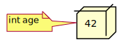
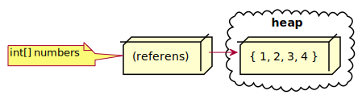
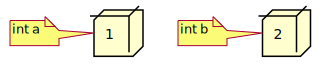
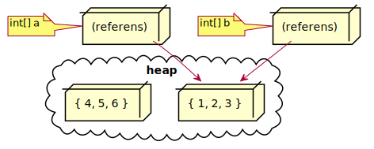
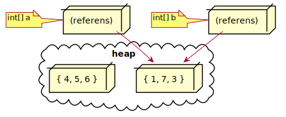

En variabel som refererar till ett fält defineras med syntaxen:
<typ>[] <identifierare>;
där <typ> är typen på elementen i fältet.
float[] testScores; // testScores är en ny referens till ett fält av floats
string[] employeeNames; // employeeNames är en ny referens till ett fält av strängar
bool[] boxesChecked; // boxesChecked är en ny referens till ett fält av booleans
newEtt nytt fält konstrueras med syntaxen:
new <typ> [ <int> ]
där av <int> är ett uttryck av typen heltal som anger fältets längd och <typ> är typen på fältets element. Elementens värden initeras till default för aktuell elementtyp (0 för tal, false för bool, null för referenstyper).
const int numberOfStudents = 25;
// tilldela passedTest en referens till ett nytt fält med 25 booleans
// initierade till default (false).
bool[] passedTest = new bool[numberOfStudents];
Length som är dess längdSyntaxen för längden på ett fält är:
<fält>.Length
där <fält> är ett uttryck av typen fältreferens.
int numberOfStudents = 25;
bool[] passedTest = new bool[numberOfStudents];
int length = passedTest.Length; // length tilldelas värdet 25
Syntaxen för en fältinitialiserare är:
{ <elem 1>, <elem 2>, .., <elem k> }
där <elem 1>, <elem 2>, .., <elem k> är uttryck av samma typ.
| Typ | Exempel på initialiserare |
|---|---|
double[] |
{ 46.5, 34.0, 36.0, 28.5 } |
string[] |
{ "Anna Nylander", "Bo Ekfors" } |
bool[] |
{ false, true, true, false, true } |
int[] a;
...
a = {1, 2, 3}; // FEL! {1, 2, 3} är ej ett uttryck!
Syntaxen för att initalisera ett nytt fält med en fältinitialiserare är:
new <typ> [] <fältinitialiserare>
där <fältinitialiserare> är en fältinitialiserare med element av typen <typ>.
| Fälttyp | Exempel på initieralisering |
|---|---|
double[] |
new double[] { 46.5, 34.0, 36.0, 28.5} |
string[] |
new string[] { "Anna Nylander", "Bo Ekfors"} |
bool[] |
new bool[] { false, true, true, false, true } |
Notera att längden på fältet ej anges mellan hakparenterserna eftersom längden är implicit från antalet element i litteralen.
new| Exempel på fältinitalisering | Implicit typ |
|---|---|
new [] { true, true, false, true, true } |
bool[] |
new [] { 46.5, 34, 36, 28.5 } |
double[] |
new [] { 123, 4294967296L, 34 } |
long[] |
Om en fältvariabel vid definition initeras till ett nytt fält med initialiserare och typen på elementet är angiven i variabelns typ så kan new <type>[] utelämnas i högerledet.
Följande två satser har samma betydelse:
double[] testScore = { 8, 16.5, 12, 17, 20, 11.5 };
double[] testScore = new double[] { 8, 16.5, 12, 17, 20, 11.5 };
Följande två satser har också samma betydelse:
string[] employeeNames = { "Anna Nylander", "Bo Ekfors };
string[] employeeNames = new string[] { "Anna Nylander", "Bo Ekfors" };
Syntaxen för indexiering av ett fält är:
<fält> [ <int> ]
där <fält> är ett uttryck av typen fältreferens och <int> är ett heltalsuttryck som anger index för ett element.
string[] array = { "Anna", "Jimmy", "Bo" };
string a = array[0]; // a tilldelas "Anna"
string b = array[1]; // b tilldelas "Jimmy"
string c = array[2]; // c tilldelas "Bo"
array[1] = "Karl"; // array innehåller nu { "Anna", "Karl", "Bo" }
// Följande rad ger FEL vid exekvering! (index out of bounds)
int d = array[3];
string)
int, double, bool, char, ...T lagrar ett värde av typen T på stackenKoden nedan:
int age = 42;
definierar en heltalsvariabel av värdetyp och initerar den med värdet 42.

T lagrar en referens till ett värde av typen T på stackenKoden nedan:
int[] numbers = { 1, 2, 3, 4 };
definierar en variabel av typen referens till ett heltalsfält.

int a = 1;
int b = 2;

b = a;
a = 3;

int[] a = { 1, 2, 3 };
int[] b = { 4, 5, 6 };

b = a;

a[1] = 7;

int a = 1;
int b = 1;
int[] c = {1, 2};
int[] d = {1, 2};
if (a == b) Console.WriteLine("a == b"); else Console.WriteLine("a != b");
if (c == d) Console.WriteLine("c == d"); else Console.WriteLine("c != d");
Utskrift:
a == b
c != d
null är värdet av en referens som inte refererar till något värde.null-referens så genereras ett fel.string name = null;
int length = name.Length;
> dotnet run myProject
Unhandled exception. System.NullReferenceException:
Object reference not set to an instance of an object.
Elementen för fältet:
int[] array = { 1, 2, 3 }
kan lagras i minnet med start på adress 1000 enligt tabell till höger med.
Notera att:
i alltid är 1000 + i * 4| Adress | Innehåll | Kommentar |
|---|---|---|
| 1000 | 00000001 | array[0] |
| 1001 | 00000000 | |
| 1002 | 00000000 | |
| 1003 | 00000000 | |
| 1004 | 00000010 | array[1] |
| 1005 | 00000000 | |
| 1006 | 00000000 | |
| 1007 | 00000000 | |
| 1008 | 00000011 | array[2] |
| 1009 | 00000000 | |
| 1010 | 00000000 | |
| 1010 | 00000000 |
start är startadressen för fältets första element i minnet, ochsize är antalet bytes för att lagra ett elementi:
start + i * sizeSyntaxen för att definiera en variabel som lagrar en referens till ett flerdimensionellt fält är:
<typ>[ , , ..] <identifierare>;
där <typ> är typen för elementen och rank är lika med antalet kommatecken mellan hakparenteserna plus 1.
Exempel
int[,] firstArray; // firstArray är ett tvådimensionellt fält
int[,,,,] secondArray; // secondArray är ett femdimensionellt fält
new// 3 sekvenser av 4 booleans, alltså totalt 3 x 4 = 12 element
bool[,] table = new bool[3, 4];
// 2 plan av 3 sekvenser av 6 heltal, alltså totalt 2 x 3 x 6 = 36 element
int[,,] tableSet = new int[2, 3, 6];
Rank som är dess rankGetLength(int) som ger:
Syntaxen för rank av ett flerdimensionellt fält är:
<fält>.Rank
där <fält> är en variabel av typen (referens till) flerdimensionellt fält.
Syntaxen för längden i en given dimension för ett flerdimensionellt fält är:
<fält>.GetLength( <int> )
där <fält> är ett flerdimensionellt fält och <int> är ett heltalsuttyck som anger aktuell dimension.
int[,,] tableSet = new int[2, 3, 6];
int rank = tableSet.Rank; // rank tilldelas 3
int length0 = tableSet.GetLength(0); // length0 tilldelas 2
int length1 = tableSet.GetLength(1); // length1 tilldelas 3
int length2 = tableSet.GetLength(2); // length2 tilldelas 6
// Följande sats ger FEL vid exekvering!
// Fältet tableSet har ingen fjärde dimension.
int length3 = tableSet.GetLength(3);
bool[,] table = new bool[3, 4] {
{true, false, true, false },
{true, true, false, false },
{false, false, true, true }
};
int[,,] tableSet = new int[2,3,6] {
{
{1, 2, 3, 4, 5, 6},
{7, 8, 9, 10, 11, 12},
{13, 14, 15, 16, 17, 18}
},
{
{19, 20, 21, 22, 23, 24},
{25, 26, 27, 28, 29, 30},
{31, 32, 33, 34, 35, 36}
}
};
En animation med 25 bildrutor om 640 x 480 pixlar där varje pixel har en färgkod av typen int kan lagras i följande tredimensionella fält:
int[,,] animation = new int[25, 480, 640];
Antag att färgkoden för grön är: 0b00000000_11111111_00000000_00000000
Följande kod sätter då pixeln i rad 16 och kolumn 327 i bildruta 7 till färgen grön:
const int green = 0b00000000_11111111_00000000_00000000;
animation[7, 16, 327] = green;
int[][] array1; // array1 är ett fält av int[]
double[][] array2; // array2 är ett fält av double[]
int[][] a = { new [] { 1, 2}, new [] { 3, 4, 5 } };
int b = a[0][1]; // b tilldelas 2
int c = a[1][2]; // c tilldelas 5
int d = a[0][2]; // FEL vid exekvering! index out of bounds
Koden nedan:
const int numberOfPersons = 100;
string firstName = new string[numberOfPersons];
string lastName = new string[numberOfPersons];
... // kod som fyller fälten med namn
// Skriv ut lista med alla namn
Console.WriteLine($"Person 1: {firstName[0]} {lastName[0]}");
Console.WriteLine($"Person 2: {firstName[1]} {lastName[1]}");
... // 96 nästan likadana rader
Console.WriteLine($"Person 99: {firstName[98]} {lastName[98]}");
Console.WriteLine($"Person 100: {firstName[99]} {lastName[99]}");
kan med en loop skrivas:
const int numberOfPersons = 100;
string firstName = new string[numberOfPersons];
string lastName = new string[numberOfPersons];
... // kod som fyller fälten med namn
// Skriv ut lista med alla namn
for (int i = 0; i < numberOfPersons; ++i)
{
Console.WriteLine($"Person {i + 1}: {firstName[i]} {lastName[i]}");
}
Hundra kodrader kunde ersättas med fyra.
whileSyntaxen för en while-loop är:
while ( <villkor> )
<sats>
Skriv ut antalet a i början på en text:
string text = "aaababcca";
int count = 0;
while (count < text.Length && text[count] == 'a') {
++count;
}
Console.WriteLine(count);
do och whileSyntaxen för en do-while-sats är:
do <sats>
while ( <villkor> );
Be använder mata in ett lösenord till korrekt lösenord är angivet:
string password;
do {
Console.WriteLine("Ange lösenord")
password = Console.ReadLine();
} while (!password.Equals("password123"));
Console.WriteLine("Korrekt lösenord");
Summera alla tal i ett fält:
double[] data = { 1.2, 7.5, 3.8, 10.5 };
double sum = 0;
int index = 0; // Initiera indexvariabel
while(index < data.Length) { // stopvillkor
// hantera aktuellt element
sum += data[index]
++index; // stega index
}
Hitta största talet på udda index i ett fält:
double[] data = { 1.2, 7.5, 3.8, 10.5, 5.3, 4.7, 0.2 };
double max = 0;
int index = 1; // Initiera indexvariabel
while(index < data.Length) { // stopvillkor
// hantera aktuellt element
if (data[index] > max) {
max = data[index];
}
index += 2; // Stega index
}
Syntexen för en for-loop använder nyckelordet for och är:
for ( <initering> ; <stopvillkor> ; <stegning> )
<sats>
med samma betydelse som:
{
<initiering> ;
while( <stopvillkor> ) {
<sats>
<stegning> ;
}
}
Summera alla tal i ett fält:
double[] data = { 1.2, 7.5, 3.8, 10.5 };
double sum = 0;
for (int i = 0; i < data.Length; ++i) {
sum += data[i]
}
Hitta största talet med index i ett fält:
double[] data = { 1.2, 7.5, 3.8, 10.5, 5.3, 4.7, 0.2 };
double max = 0;
for (int i = 1; i < data.Length; i += 2)
if (data[i] > max) {
max = data[i];
}
}
for-satsen koden lätt att läsafor-sats som används på annat sätt gör koden missledande!for-satser endast i avsett syfte!Nyckelordet break får programflödet att hoppa ut ur aktuell loop.
int[] numbers = new int[100];
... // kod som fyller fältet
const int key = 17;
// hitta index för första förekomsten av 'key' i fältet
int index = numbers.Length;
for (int i = 0; i < numbers.Length; ++i)
{
if (numbers[i] == key)
{
index = i;
break;
}
}
bool foundKey = index != numbers.Length;
Nyckelordet continue får programflödet att gå direkt till början på nästa iteration i aktuell loop.
string[] names = new string [100];
// kod som fyller fältet med värden
// Skriv ut kommaseparerad lista med alla namn
string nameList = "";
int index = 0;
while (true)
{
string name = names[index];
++index;
if (name == null || name.Equals(""))
continue;
nameList += name;
if (++index == names.Length)
break;
else
nameList += ", ";
}
Console.WriteLine(nameList);